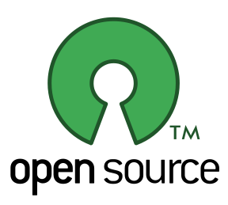

Dirk Deimeke und Roman Hanhart
Inhalt
- Was ist OpenSourceSoftware?
- Einige Lizenzmodelle dazu
- Die einfachste OpenSource-Lizenz
- ClosedSource
- Folgerungen
Was ist OpenSourceSoftware?
- Open Source bedeutet zu Deutsch quelloffen und ist eine Palette von Lizenzen für Software, deren Quelltext öffentlich zugänglich ist und durch die Lizenz Weiterentwicklungen fördert.
- Open-Source-Software steht unter einer von der Open Source Initiative (OSI) anerkannten Lizenz.
- Die Software (das heisst der Quelltext) liegt in einer für den Menschen lesbaren und verständlichen Form vor.
- Die Software darf beliebig kopiert, verbreitet und genutzt werden.
- Die Software darf verändert und in der veränderten Form weitergegeben werden.
Einige Lizenzmodelle dazu
- Netscape entschied im Jahre 1998 angesichts der wachsenden Dominanz von Microsoft am Browser-Markt, den Quelltext des wirtschaftlich nicht mehr verwertbaren Netscape Navigators freizugeben. Aus dieser Freigabe entstand später das Mozilla-Projekt.
- Eine der bekanntesten Lizenzen, die aus diesen Bestrebungen hervorging, ist die Mozilla Public License
- Weitere Lizenzformen
- Creative Commons (CC)
- Apache Software License
- General Public License (GPL)
Einfachste OpenSource-Lizenz
- Die BSD Lizenz ist die wohl einfachste OpenSource-Lizenz, sie besteht nur aus zwei Sätzen.
- Gib nicht vor den Code geschrieben zu haben.
- Verklage mich nicht, wenn etwas nicht funktioniert.
ClosedSource
- Quellcode liegt nur in binärer Form vor und ist von Menschen nicht lesbar
- Quellcode kann nicht verändert werden, ist meist geheim
- Der Code ist Eigentum einer juristischen oder natürlichen Person.
- Meist darf die Software nicht weitergegeben werden
- Zwischen Freeware und OpenSourceSoftware besteht ein Unterschied
- Zwischen Public Domain Software und OpenSourceSoftware besteht ein Unterschied
- Oft kostenpflichtig
Folgerungen
- Investitionsschutz
- Zukunftssicherheit
- Plattformunabhängigkeit
Erläuterung
- Software ist so wie sie ist funktionstüchtig und muss nicht aufgrund von Herstellervorgaben oder um weiterhin Support zu erhalten, aktualisiert werden.
- Beispielsweise unterstützt der Hersteller einer Software nur noch das aktuelle Betriebssystem eines anderen Herstellers.
- Selbst, wenn man selber nicht programmieren kann, kann man die Features, die man haben möchte - auch gegen Bezahlung - in Auftrag geben.
- Features werden für ClosedSourceSoftware nach wirtschaftlichen Gesichtspunkten implementiert, da haben Minderheiten keine Chance.
- Wenn eine ClosedSourceSoftware abgekündigt wird, muss man migrieren.
- Bei Abkündigung von OpenSourceSoftware besteht die Möglichkeit, sie durch andere weiterentwickeln zu lassen.
Erläuterung (Fortsetzung)
- Ein Wechsel der Software-Plattform lässt sich mit Einsatz von OpenSourceSoftware leichter bewerkstelligen
- Nutzung der gleichen Software, unabhängig vom Betriebssystem.
- Wichtiger: Nutzung der gleichen Daten, unabhängig vom Betriebssystem.
- Wechsel von Windows nach Mac OS X und Linux (und zurück) sind möglich.
- Die Lernkurve beim Wechsel der Plattform wird flacher und damit werden auch weniger Schulungen benötigt.
Demo
- Wir haben ein paar Programme aus dem sehr grossen OpenSource-Universum herausgesucht, die auf mehreren Plattformen laufen und Datenaustausch erlauben.